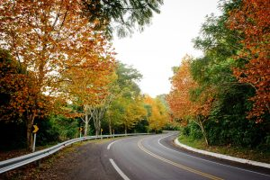
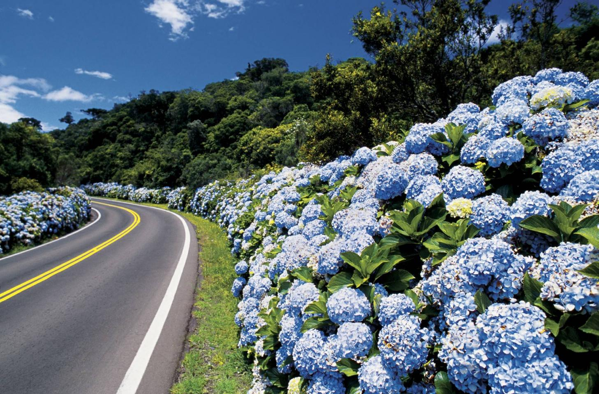
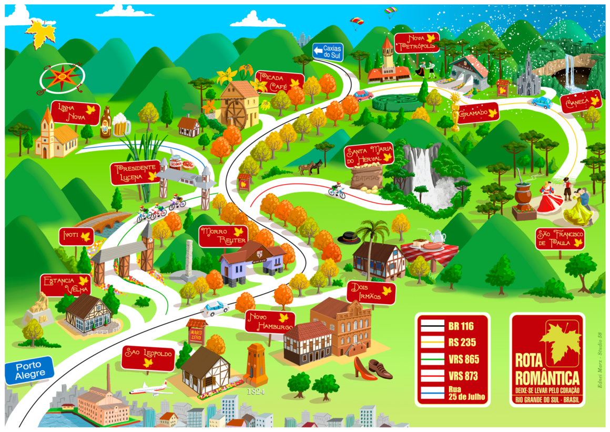

Rota Romântica
Rota encantadora no RS, entre cidades de herança alemã e paisagens floridas.
Sobre a Rota
Localizada no Rio Grande do Sul, essa rota cruza cidades com forte herança alemã, como Gramado e Nova Petrópolis, em meio a florestas, jardins floridos e arquitetura charmosa digna de contos de fadas. Um convite ao encantamento.
Informações rápidas
- Estado: Rio Grande do Sul
- Ponto inicial: São Leopoldo (RS)
- Ponto final: Nova Petrópolis (RS)
- Distância: Aproximadamente 184 km
- Piso: Asfalto
- Dificuldade: Leve
- Ideal para: Turismo romântico e cultural
Galeria



Saiba mais em: https://rotaromantica.com.br/pt_BR/